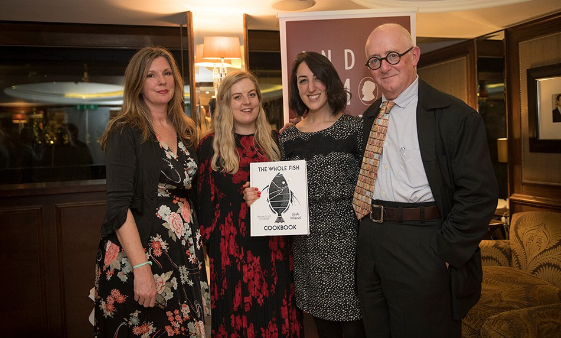
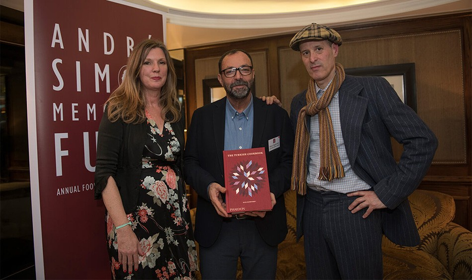
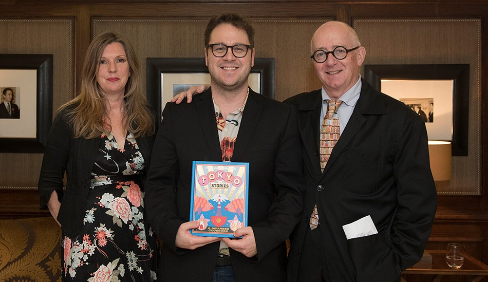
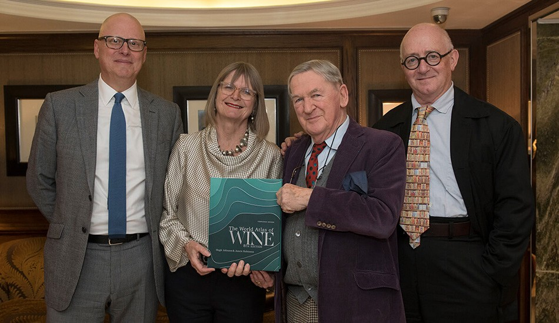

Last Monday (20 January) the André Simon Food & Drinks Awards took place at the Goring Hotel in London. For over 40 years, they have been celebrating the very best in contemporary food and drink writing, and we’re pleased to say that tpr media has been with the awards for six years.
Alongside the judges, previous André Simon winner and critically acclaimed writer Niki Segnit assessed this year's food books, she won the best food book in 2010 for Flavour Thesaurus, whilst wine expert Dan Jago assessed the drink books – in the end, three of the four prizes were awarded to world renowned chefs, with publisher Hardie Grant scooped two prizes for The Whole Fish Cookbook and Tokyo Stories.
Left to right: Niki Segnit, Ruth Tewksbury, Emma Marijewycz (Hardie Grant) and chair Nick Lander
Sydney's ground-breaking seafood chef Josh Niland was the winner of the 2019 Food Award for The Whole Fish Cookbook – a book which reveals an original way to think about all aspects of fish cookery for every skill level. The Whole Fish Cookbook brings an approachability to the idea that fish isn't the smelly, slimy and bony ingredient that strikes fear into all of us, but is rather something that is individual – species to species and piece to piece – each coming with its own characteristics and a method of cookery that suits it best.
Left to right: Niki Segnit, Musa Dağdeviren and photographer Toby Glanville
Musa Dağdeviren won a Special Commendation for The Turkish Cookbook, which celebrates the diversity of authentic Turkish cuisine, with 550 recipes that explore the country's European and Asian culinary heritage. Musa Dağdeviren is Turkey’s most acclaimed chef and featured in the latest series of the Netflix show Chef's Table. He has poured all of his passion for the culinary heritage of his homeland into this book. He showcases the most cherished and nostalgic recipes from the cultural landscape of Turkey, for a modern audience.
Left to right: Niki Segnit, Tim Anderson and chair Nick Lander
Masterchef Champion Tim Anderson scooped the John Avery Award for Tokyo Stories. This book takes readers on a journey through the boulevards and backstreets of Tokyo via recipes, both iconic and unexpected. Andersontakes inspiration from the chefs, shopkeepers, and home cooks of Tokyo to showcase traditional and cutting-edge takes on classic dishes like sushi, ramen, yakitori, and tempura.
Left to right: Dan Jago, Jancis Robinson, Hugh Johnson and chair Nick Lander
The World Atlas of Wine 8th edition by Hugh Johnson and Jancis Robinson won the Drink Award. This 8th edition is designed to bring readers, both old and new, up to date with the world of wine. To reflect all the changes in the global wine scene over the past six years, the Atlas has grown to 416 pages and 22 new maps have been added to the wealth of cartography in the book. With beautiful photography throughout, Hugh Johnson and Jancis Robinson, the respected wine-writing duo, have once again joined forces to create a classic.
The winners this year were selected from 150 submissions, and a very strong shortlist which included Bridget Anderson and Stephen Anderson (Burma: Food, Family & Conflict), Bee Wilson (The Way We Eat Now), John Wright (The Forager’s Calendar), Ned Palmer (A Cheesemonger's History of The British Isles), Catherine Phipps (Leaf), Angela Clutton (The Vinegar Cupboard), Aldo Sohm (Wine Simple), Wink Lorch (Wines of the French Alps), Tom Stevenson and Essi Avellan (Christie’s Encyclopedia of Champagne and Sparkling Wine – fourth edition), Mark Dredge (A Brief History of Lager), Alexis Willett (Drinkology), Michelle and Rob Comins (Tales of the Tea Trade).
My team and I loved working on this project and had a great evening – we’re really enjoying cooking from the books.